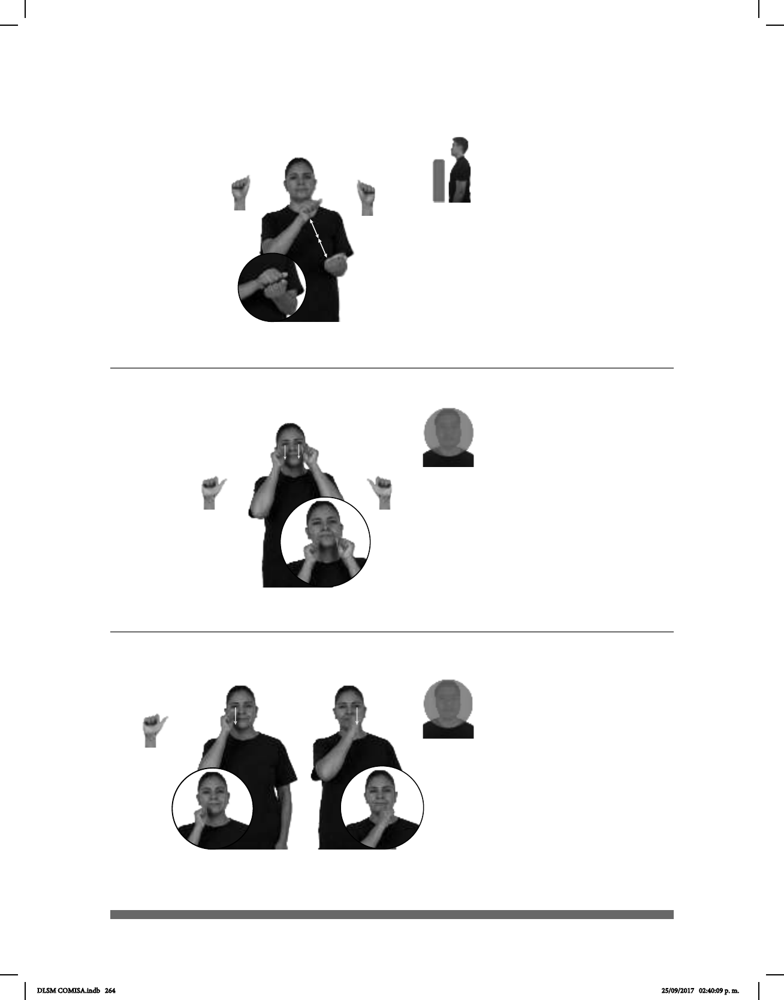

264
(A-94)
(A-95)
PARQUE
allá
CHICHARRÓN CON CHILE pro-YO YA COMPRAR
Compré un chicharrón con salsa en el parque.
METRO MUCHO CIEGO HABER
En el metro hay muchos ciegos.
(A-96)
SUEGRO pos-MI PRIMO dm-SAMUEL pro-ÉL CIEGO pro-ÉL
El suegro de mi primo Samuel es ciego.
Seña: SS
A.5
Las palmas se encuentran
frentre a frente.
A la altura del pecho.
Las manos se encuentran
y se tocan frente a frente.
Simula romper o
tronar un trozo de chicharrón.
sust. m. Carne o gordura
frita de cerdo.
Seña: SS
A.1
Palmas oblicuas hacia
afuera y hacia el centro.
Sobre los pómulos y se
desliza hacia la barbilla.
Recto.
Simula la acción de
cerrar los ojos.
1. adj. y sust. Que carece
del sentido de la vista.
Seña: SC: I. y II. SM
I. y II. A.1
I. y II. Palma hacia la
izquierda.
I. Sobre el pómulo derecho;
II. Sobre el pómulo izquierdo.
I. y II. Recto hacia abajo.
Simula cerrar los ojos.
adj. y sust. Que carece del
sentido de la vista.
DLSM COMISA.indb 264 25/09/2017 02:40:09 p. m.